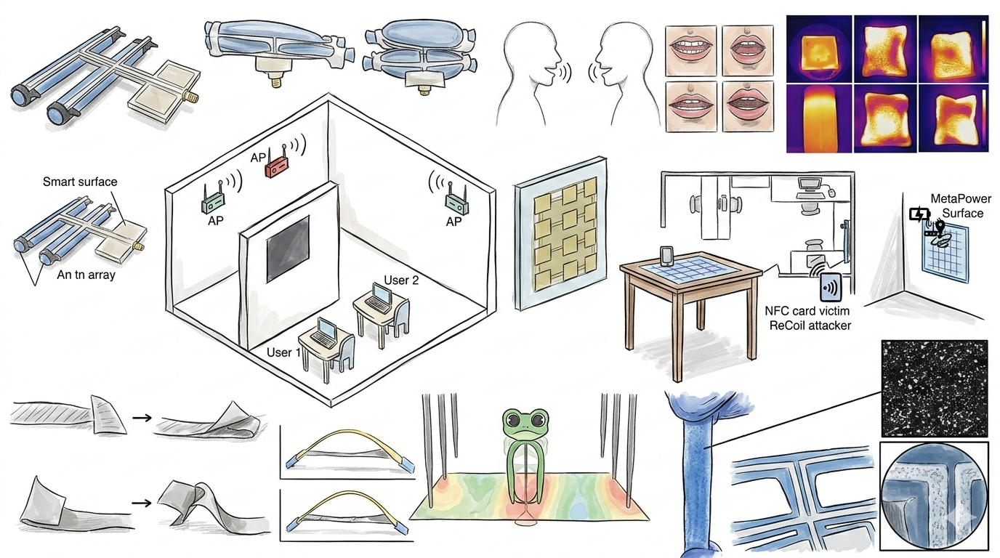

Research Frontiers
The WiTech Lab's research sits at the intersection of wireless systems, sensing, materials, and intelligence. Over a decade of work spanning ~80 papers across SIGCOMM, MobiCom, SenSys, CHI, and Nature journals has converged into four thematic pillars.
The lab repurposes wireless signals — mmWave radar, WiFi, RFID, and acoustic waves — as high-fidelity sensors for the physical world. Systems perceive human physiology (muscle fatigue, dental health, swallowing), material properties (surface texture, depth, package integrity), and environment (tire wear, wind noise, indoor positioning) without cameras or body contact. Cross-modal fusion — pairing mmWave with cameras or acoustic transducers — pushes spatial and material resolution far beyond what any single modality achieves alone.

The lab engineers systems where wireless signals don't just carry information — they physically reshape matter. Liquid-metal antennas reconfigure to any operating frequency; metasurfaces convert or redirect RF energy across a 2–8 GHz span; and electronics-free soft robots navigate environments using only wireless heating — no batteries, no wires, no on-board control. The result is a class of programmable wireless hardware whose morphology, resonance, and motion are all controlled through the air.

The lab designs network architectures and AI-augmented systems that scale wireless capacity, sharpen spectral efficiency, and coordinate intelligent agents. Foundational contributions (MegaMIMO, OpenRF) demonstrated order-of-magnitude throughput gains in shared spectrum; later work eliminated channel-state feedback overhead in cellular networks. Most recently, LLMs now assist FCC spectrum compliance (WiLL) and reinforcement learning guides whale-tagging robot teams (AVATARS) — reflecting a shift toward AI-native wireless design.

The lab designs protocols and hardware to bring wireless to the most resource-constrained settings: battery-free backscatter tags, long-range LP-WAN networks, ambient energy harvesting, and CubeSat/LEO satellite links. Research spans the full stack — from physical-layer waveform design to network-layer aggregation — enabling ubiquitous sensing at building and city scale. Metamaterial reflectors, ambient RF harvesting, and community-operated ground stations reflect a philosophy: wireless coverage should reach everyone, powered by nothing more than signals already in the air.